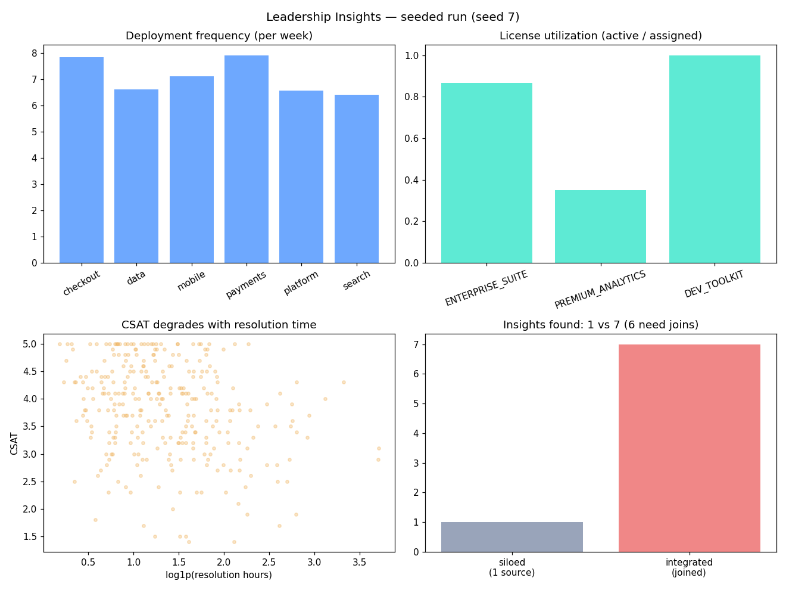

The boundary problem, measured: per-layer observers are blind at the seams — find the gaps, close them, fund reliability like a portfolio.
Observability tools see their own layer well and the seams between layers badly. Infra-to-app and app-to-service boundaries are blind spots where cascading incidents go undetected — while SRE teams drown in per-layer alerts that never assemble into one incident context.
Nobody scores observability at the boundaries. Teams buy more dashboards instead of measuring true positives, false negatives, and time-to-detect per layer and per intersection — so the weakest seam is never identified and never fixed.
A MAS-based platform: per-layer observer agents with realistic capability profiles, a boundary-assessment workflow that ranks seams by observability gap (TP/TN/FN, time-to-detect), closed-loop targeted fixes, unified incident response, cross-layer context engineering — and a strategy bridge that treats reliability vs innovation as a portfolio optimization under a fixed budget.
| Experiment | Result |
|---|---|
| boundary problem | intra-layer recall 0.91 vs boundary link recall 0.78; service→product 0.00 (blind) |
| closed loop | targeted fix at service→product: recall 0.00 → 1.00, link time −3.0 min |
| cascades (n=15) | siloed 73% runbook / 102 min MTTR vs unified 100% / 78 min |
| strategy bridge ($100k) | downtime 320→80 min, cost $1.40M→$0.35M, ROI 1.00x → 2.26x |
Seeds 0–4. Detection used trailing median/MAD (mean/std collapses under incident crowding — documented as an insight). The product-layer cascade symptom sits below the detection threshold by design: that is precisely why the boundary needs cross-layer visibility.

experiments/run_experiments.py — re-running reproduces these exactly.src/agentic_systems/sre_observability/
layers.py # 6-layer telemetry simulator with cascading incidents
observers.py # per-layer observer agents, median/MAD detection
boundary.py # per-boundary TP/FN/F1, gap ranking
response.py # unified vs siloed responders, runbooks, MTTR
strategy.py # initiative portfolio optimizer + scorecard
10-sre-observability/
experiments/run_experiments.py # a-e: boundaries, closed loop, cascades, frontier (seeds 0-4)
Full source, tests, and experiment code: 10-sre-observability/ ·
Run: cd 10-sre-observability && python3 experiments/run_experiments.py